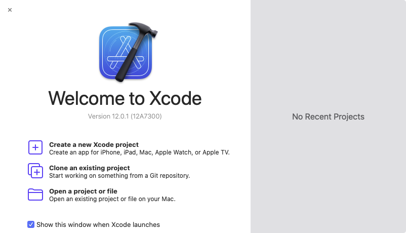
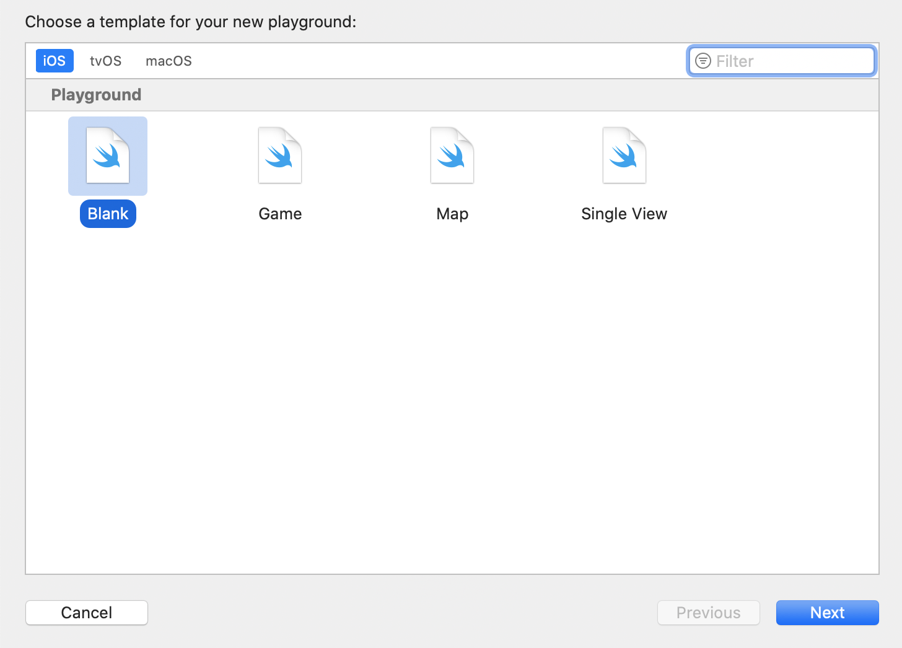
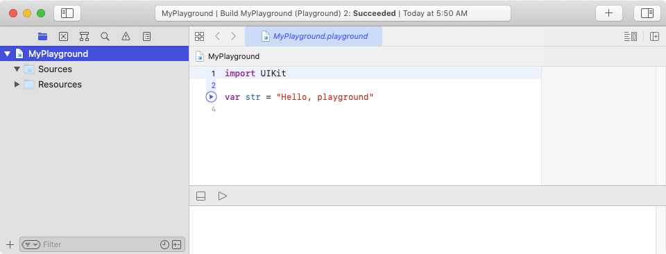
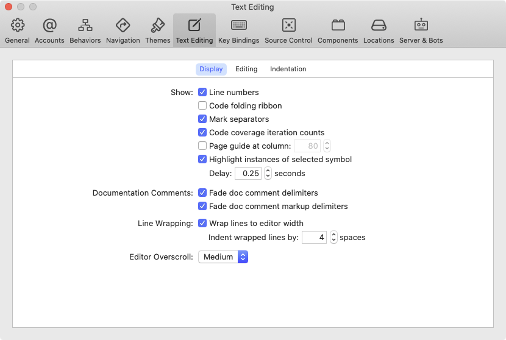
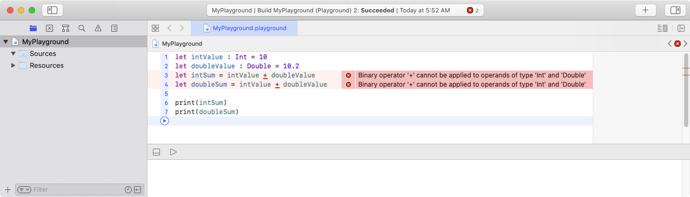
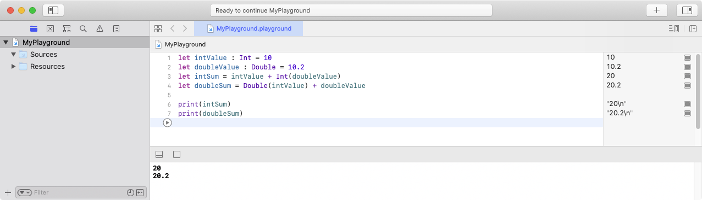
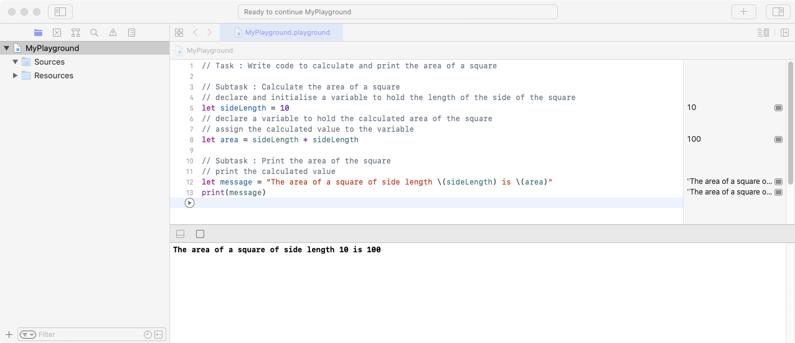

def example1():
width = 0
width = 10
height = 5
area = height * width
statement1 = "The height is " + str(height) + " and the width is " + str(width)
print(statement1)
statement2 = "The area is " + str(area)
print(statement2)
def example2():
today = "Wednesday"
if (today == "Saturday") or (today == "Sunday"):
print("It's the weekend!")
elif (today == "Wednesday"):
print("It's Portfolio Day!")
else:
print("I have class today!")
# call the function example1 and example2
example1()
example2()<html>
<head></head>
<body>
<pre>
<?php
function example1()
{
$width = 0;
$width = 10;
$height = 5;
$area = $height * $width;
print("\n");
$statement1 = "The height is {$height} and the width is {$width}\n";
print($statement1);
$statement2 = "The area is " . $area . "\n";
print($statement2);
}
function example2()
{
$today = "Wednesday";
if (($today == "Saturday") || ($today == "Sunday")) {
print("It's the weekend!");
} else if ($today == "Wednesday") {
print("It's Portfolio Day!");
} else {
print("I have class today!");
}
}
// call the function example1 and example2
example1();
example2();
?>
</pre>
</body>
</html>package example;
public class MainApplication {
public static void main(String[] args) {
// call the function example1
MainApplication app = new MainApplication();
app.example1();
app.example2();
}
private void example1() {
Integer width = 0;
width = 10;
Integer height = 5;
Integer area = height * width;
String statement1 = String.format("The height is %d and the width is %d", height, width);
System.out.println(statement1);
String statement2 = "The area is " + area;
System.out.println(statement2);
}
private void example2() {
String today = "Wednesday";
if ((today == "Saturday") || (today == "Sunday")) {
System.out.println("It's the weekend!");
} else if (today == "Wednesday") {
System.out.println("It's Portfolio Day!");
} else {
System.out.println("I have class today!");
}
}
}



https://docs.swift.org/swift-book/LanguageGuide/TheBasics.html
Declaring Constants and Variables
let keyword - the value of a constant can't be changed once it's setvar keyword - the value of a variable can be set to a different value in the futurelet maximumNumberOfLoginAttempts = 10
var welcomeMessage = "welcome"Type Annotations
let maximumNumberOfLoginAttempts : Int
var welcomeMessage : StringNaming Constants and Variables
Printing Constants and Variables
print() function:let maximumNumberOfLoginAttempts = 10
var welcomeMessage = "welcome"
print(maximumNumberOfLoginAttempts)
print(welcomeMessage)
print(maximumNumberOfLoginAttempts, welcomeMessage)https://docs.swift.org/swift-book/LanguageGuide/TheBasics.html
///* and end with an asterisk followed by a forward-slash */// This is a single line comment.
/* This is a
multiline comment */https://docs.swift.org/swift-book/LanguageGuide/TheBasics.html
Integer and Floating-Point Conversion
let intValue : Int = 10
let doubleValue : Double = 10.2
let intSum = intValue + Int(doubleValue)
let doubleSum = Double(intValue) + doubleValue // value is 20.2
print(intSum)
print(doubleSum)https://docs.swift.org/swift-book/LanguageGuide/BasicOperators.html
Assignment Operator
The assignment operator (a = b) initializes or updates the value of a with the value of b:
let b = 10
var a = 5
a = b
// a is now equal to 10Arithmetic Operators
Swift supports the four standard arithmetic operators for all number types:
1 + 2 // equals 3
5 - 3 // equals 2
2 * 3 // equals 6
10.0 / 2.5 // equals 4.0Remainder Operator
The remainder operator (a % b) works out how many multiples of b will fit inside a and returns the value that is left over (known as the remainder).
9 % 4 // equals 1Compound Assignment Operators
Swift provides compound assignment operators that combine assignment (=) with another operation. One example is the addition assignment operator (+=):
var a = 1
a += 2
// a is now equal to 3
// The expression a += 2 is shorthand for a = a + 2.let intValue : Int = 10
let doubleValue : Double = 10.2
let intSum = intValue + doubleValue
let doubleSum = intValue + doubleValue
print(intSum)
print(doubleSum)
let intValue : Int = 10
let doubleValue : Double = 10.2
let intSum = intValue + Int(doubleValue)
let doubleSum = Double(intValue) + doubleValue
print(intSum)
print(doubleSum)
https://docs.swift.org/swift-book/LanguageGuide/StringsAndCharacters.html
String Literals
String literals are surrounded by double quotation marks ""
let someString = "Some string literal value"Initializing an Empty String
To create an empty String value either
var emptyString = "" // empty string literal
var anotherEmptyString = String() // initializer syntaxTo find out whether a String value is empty, either
isEmpty property, orvar emptyString = "" // empty string literal
let isEmpty1 = emptyString.isEmpty // value is true
let isEmpty2 = emptyString == "" // value is trueString Interpolation
(\)let multiplier = 3
let message = "\(multiplier) times 2.5 is \(Double(multiplier) * 2.5)"
// message is "3 times 2.5 is 7.5"Comparing Strings
String equality is checked with the "equal to" operator == and the "not equal to" operator !=
example.swift
let quotation = "We're a lot alike, you and I."
let sameQuotation = "We're a lot alike, you and I."
let isSame = quotation == sameQuotation // value is true// Task : Write code to calculate and print the area of a square
// Subtask : Calculate the area of a square
// declare and initialise a variable to hold the length of the side of the square
let sideLength = 10
// declare a variable to hold the calculated area of the square
// assign the calculated value to the variable
let area = sideLength * sideLength
// Subtask : Print the area of the square
// print the calculated value
let message = "The area of a square of side length \(sideLength) is \(area)"
print(message)
https://docs.swift.org/swift-book/LanguageGuide/TheBasics.html
let orangesAreOrange : Bool = true
let turnipsAreDelicious = falsehttps://docs.swift.org/swift-book/LanguageGuide/BasicOperators.html
Comparison Operators
a == ba != ba > ba < ba >= ba <= bEach of the comparison operators returns a Bool value to indicate whether or not the statement is true
1 == 1 // true because 1 is equal to 1
2 != 1 // true because 2 is not equal to 1
2 > 1 // true because 2 is greater than 1
1 < 2 // true because 1 is less than 2
1 >= 1 // true because 1 is greater than or equal to 1
2 <= 1 // false because 2 is not less than or equal to 1Logical Operators
!a inverts a Boolean value so that true becomes false, and false becomes true.a && b creates logical expressions where both values must be true for the overall expression to be true.a || b creates logical expressions where either value must be true for the overall expression to be true.// logical NOT
let isWeekend = false // value is false
let isWeekday = !isWeekend // value is true
// logical AND
let enteredDoorCode = true
let passedRetinaScan = false
let passedAllSecurityChecks = enteredDoorCode && passedRetinaScan
// value is false
// logical OR
let hasDoorKey = false
let knowsOverridePassword = true
let canEnter = hasDoorKey || knowsOverridePassword
// value is truehttps://docs.swift.org/swift-book/LanguageGuide/ControlFlow.html
It is often useful to execute different pieces of code based on certain conditions. You might want to run an extra piece of code when an error occurs, or to display a message when a value becomes too high or too low. To do this, you make parts of your code conditional.
In its simplest form, the if statement has a single if condition. It executes a set of statements only if that condition is true.
var temperatureInFahrenheit = 30
if temperatureInFahrenheit <= 32 {
print("It's very cold. Consider wearing a scarf.")
}
// Prints "It's very cold. Consider wearing a scarf."The example above checks whether the temperature is less than or equal to 32 degrees Fahrenheit (the freezing point of water). If it is, a message is printed. Otherwise, no message is printed, and code execution continues after the if statement's closing brace.
The if statement can provide an alternative set of statements, known as an else clause, for situations when the if condition is false. These statements are indicated by the else keyword.
if temperatureInFahrenheit <= 32 {
print("It's very cold. Consider wearing a scarf.")
} else {
print("It's not that cold. Wear a t-shirt.")
}
// Prints "It's not that cold. Wear a t-shirt."One of these two branches is always executed. Because the temperature has increased to 40 degrees Fahrenheit, it is no longer cold enough to advise wearing a scarf and so the else branch is triggered instead.
You can chain multiple if statements together to consider additional clauses.
var temperatureInFahrenheit = 90
if temperatureInFahrenheit <= 32 {
print("It's very cold. Consider wearing a scarf.")
} else if temperatureInFahrenheit >= 86 {
print("It's really warm. Don't forget to wear sunscreen.")
} else {
print("It's not that cold. Wear a t-shirt.")
}
// Prints "It's really warm. Don't forget to wear sunscreen."Here, an additional if statement was added to respond to particularly warm temperatures. The final else clause remains, and it prints a response for any temperatures that are neither too warm nor too cold.
The final else clause is optional, however, and can be excluded if the set of conditions does not need to be complete.
var temperatureInFahrenheit = 72
if temperatureInFahrenheit <= 32 {
print("It's very cold. Consider wearing a scarf.")
} else if temperatureInFahrenheit >= 86 {
print("It's really warm. Don't forget to wear sunscreen.")
}Because the temperature is neither too cold nor too warm to trigger the if or else if conditions, no message is printed.
var temperatureInFahrenheit = 90
if temperatureInFahrenheit <= 32 {
print("It's very cold. Consider wearing a scarf.")
} else if temperatureInFahrenheit >= 86 {
print("It's really warm. Don't forget to wear sunscreen.")
} else {
print("It's not that cold. Wear a t-shirt.")
}
// Prints "It's really warm. Don't forget to wear sunscreen."temperatureInFahrenheit to different values and execute the code. Check if the printed statement is what you expected. Try the following values: 31, 32, 33, 85, 86, 87.Exercise
70.0kg is 154.0lbs
80.0kg is 176.0lbs
Exercise
The equation for a straight line is given by y = mx + c y represents a value on the y-axis x represents a value on the x-axis m represents the gradient of the line c represents the y-intercept of the line
The value of y given m(3.2) x(4.4) c(10.8) is 24.88
Exercise
http://intranet.rp.edu.sg/sites/StudentHandbook/SitePages/01.Academic_Information.aspx
Each module grade is associated with a description and a Grade Point (GP):
Grade | Description | Grade Point |
DIST | Excellent | 4.0 |
A | Excellent | 4.0 |
B+ | Very Good | 3.5 |
B | Very Good | 3.0 |
C+ | Good | 2.5 |
C | Good | 2.0 |
D+ | Pass | 1.5 |
D | Pass | 1.0 |
F | Fail | 0.0 |
Grade A is equal to a grade point of 4.0
Grade C is equal to a grade point of 2.0
Exercise
https://en.wikipedia.org/wiki/Leap_year
Year 1996 is a leap year
Year 1997 is not a leap year
Year 2000 is a leap year
Year 2100 is not a leap year
Exercise
http://intranet.rp.edu.sg/sites/StudentHandbook/SitePages/01_Course_Fees.aspx
The table below shows the amounts and details of the course fees payable.
Type of Fee | Singapore Citizens | Singapore Permanent Residents | International Students |
Subsidised Tuition Fee Payable | $2,900.00 | $5,800.00 | $10,400.00 |
Supplementary Fee (inclusive of GST) | $86.50 | $116.50 | $159.50 |
feeType which can assume one of the following values: SC, SPR, IS. The code should include the variables tuitionFee and supplementaryFee. The code should have only one print statement.Singapore Citizens pay $2986.5 (Tuition Fee: $2900.0, Supplementary Fee: $86.5)
Singapore Permanent Residents pay $5916.5 (Tuition Fee: $5800.0, Supplementary Fee: $116.5)
International Students pay $10559.5 (Tuition Fee: $10400.0, Supplementary Fee: $159.5)
Exercise
https://www.iras.gov.sg/irashome/Individuals/Locals/Working-Out-Your-Taxes/Income-Tax-Rates/
For a salary of $36000.0, the income tax is $410.0 The effective income tax rate is 1.1388888888888888%
For a salary of $150000.0, the income tax is $12450.0 The effective income tax rate is 8.3%